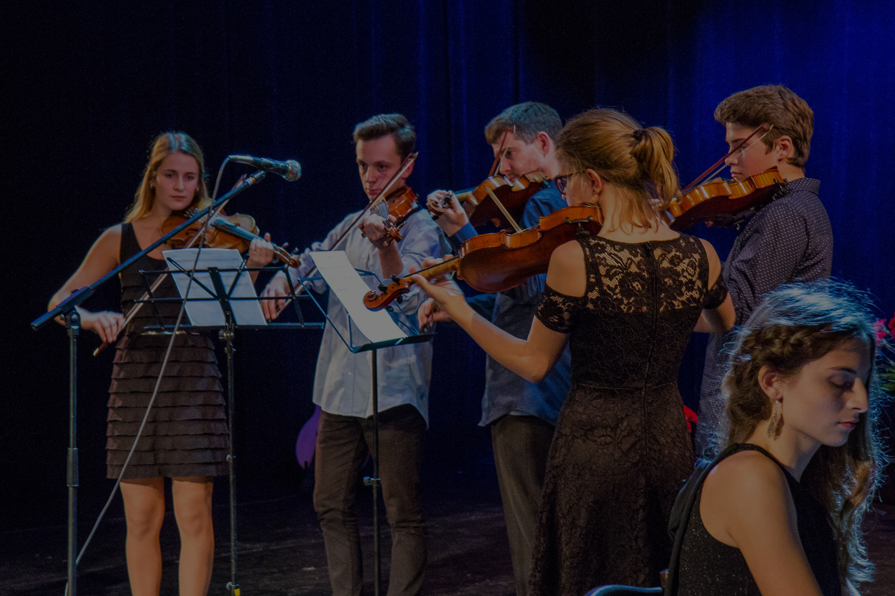
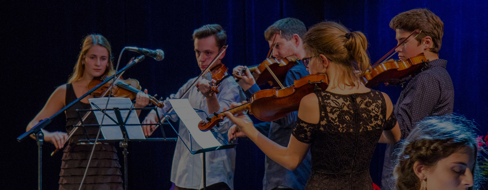

Školský poriadok Centra voľného času

Školský poriadok Centra voľného času


Školský poriadok vychádza zo Zákona o výchove a vzdelávaní č. 245/2008 Z.z. A z Deklarácie práv dieťaťa a Listiny základných práv a slobôd vo vzťahu k účastníkom činnosti centra, vychovávateľom a ostatným zamestnancom Centra voľného času pri Gymnáziu, Javorová 16, Spišská Nová Ves (ďalej Centrum). Centrum usmerňuje rozvoj záujmov detí a ostatných osôb, utvára vytvára podmienky na rozvíjanie a zdokonaľovanie ich praktických zručností, podieľa sa na formovaní návykov užitočného využívania voľného času. Zabezpečuje osobnostný rozvoj detí a mládeže. Je výchovno-vzdelávacím zariadením s celoročnou prevádzkou.
Členstvo v záujmovej činnosti vzniká dobrovoľným prihlásením sa za člena záujmového útvaru Centra voľného času pri Gymnáziu, Javorová 16 (odovzdaním riadne vyplnenej prihlášky a uhradením členského poplatku). Svojim prihlásením sa člen Centra zaväzuje riadne dochádzať na záujmovú činnosť a je povinný riadiť sa pokynmi pedagogického pracovníka, externého pracovníka a školským poriadkom školského zariadenia. V záujme naplnenia práva na kvalitne využitý voľný čas Centrum zabezpečí svoju prevádzku, organizáciu činností členov a podmienky pre optimálne medziľudské vzťahy tak, aby čas strávený v Centre bol efektívne využitý z hľadiska neformálneho vzdelávania.
1. Výchovno-vzdelávací proces sa riadi platným rozvrhom hodín, ktorý je povinný rešpektovať každý člen záujmového útvaru a každý pedagogický pracovník.
2. Priama výchovná činnosť v Centre sa začína o 7.00 hodine a končí o 20.00 hodine počas pracovných dní. Počas voľných dní podľa potreby a rozvrhu hodín.
3. Člen záujmového útvaru (ďalej člen ZÚ) minimálne 5 minút pred konaním činnosti je povinný nachádzať sa v priestoroch, kde sa činnosť koná. Činnosť prebieha podľa rozvrhu hodín, jedna vyučovacia hodina v Centre trvá 60 minút. Prestávky v činnosti stanovuje individuálne podľa náročnosti záujmovej činnosti vedúci záujmového útvaru.
4. Záujmová činnosť sa začína 1. Septembra a končí 31. Júna v príslušnom školskom roku.
5. Na jednorazových podujatiach sa činnosť Centra realizuje podľa vopred schváleného organizačného zabezpečenia vo vopred stanovenom termíne a čase pre deti a mládež a širokú verejnosť.
6. Výchovno-vzdelávací proces je vykonávaný v učebniach a v telocvični gymnázia, ako i v priestoroch dohodnutých s externými vedúcimi záujmových útvarov. V letnom období na ihriskách, vo voľnej prírode a podobne.
7. Na záujmovú činnosť používa žiak primerané oblečenie a obuv podľa požiadaviek BOZP a vedúceho záujmového útvaru.
8. Za bezpečnosť žiaka počas vzdelávacej činnosti záujmového útvaru zodpovedá vedúci záujmového útvaru. Počas činnosti vyplývajúcej z plánu činnosti zodpovedá za bezpečnosť pedagogický dozor. Za bezpečnosť dieťaťa mimo priamej činnosti Centra zodpovedá vedúci záujmového útvaru alebo pridelený pedagogický dozor.
9. Pri výletoch a exkurziách vykonáva pedagogický dozor do počtu 15 účastníkov 1 pedagogický zamestnanec, ak je počet prekročený je zabezpečená ďalšia účasť plnoletej osoby.
PRÁVA ČLENOV ZÁUJMOVÝCH ÚTVAROV CVČ
Každý člen Centra má právo na:
1. Ochranu zdravia a bezpečnosti pri činnosti v Centre (na začiatku školského roka je oboznámený vedúcim ZÚ zo zásadami BOZP).
2. Organizáciu výchovy a vzdelávania primeranú jeho veku, schopnostiam, záujmom, zdravotnému stavu a v súlade s psychohygienickými zásadami.
3. Poskytnutie kvalitnej záujmovej činnosti pri dodržiavaní pedagogických zásad a príslušných právnych noriem, na neformálne vzdelanie zamerané na rozvoj osobnosti, talentu, rozumových a fyzických schopností s rešpektovaním individuality jednotlivca.
4. V duchu humanity a tolerancie vysloviť slušným spôsobom svoj názor a nebyť za svoj názor trestaný.
5. Na kladenie otázok vychovávateľovi a odpovede k téme, ktorá sa preberá na záujmovom útvare.
6. Na objektívne hodnotenie vo všetkých oblastiach záujmovej činnosti.
7. Zapojiť sa do niektorej z foriem záujmovej činnosti, ktoré Centrum ponúka, po výbere má povinnosť ich navštevovať.
8. Využívať priestory Centra na mimoškolskú činnosť za prítomnosti pedagogického dozoru.
9. Obrátiť sa na pracovníkov Centra a jeho riaditeľa ak má pocit, že došlo k porušeniu jeho práv.
10. Predložiť svoje požiadavky a návrhy na zlepšenie záujmovej činnosti vedeniu Centra.
11. Byť informovaný o činnosti Centra a využívať členské výhody na základe odovzdania vzdelávacieho poukazu v príslušnom školskom roku.
12. Ochranu osobných údajov pred ich šírením a zneužívaním.
13. Pri úraze, alebo nevoľnosti na poskytnutie prvej pomoci, pri vážnejšom úraze na lekársku pomoc. Na ošetrenie ide buď v sprievode rodiča – zákonného zástupcu, alebo pedagogického zamestnanca.
14. Úctu k jeho vierovyznaniu, svetonázoru, národnostnej a etnickej príslušnosti.
15. Úctu k svojej osobe a na zabezpečenie ochrany proti fyzickému, psychickému a sexuálnemu násiliu.
16. Člen so špeciálnymi výchovno-vzdelávacími potrebami má právo na výchovu a vzdelávanie s využitím špecifických foriem a metód, ktoré zodpovedajú jeho potrebám, a na vytvorenie nevyhnutných podmienok, ktoré túto výchovu a vzdelávanie umožňujú.
17. Člen ZÚ nesmie byť v súvislosti s výkonom svojich práv postihovaný za to, že podá na iného člena ZÚ, pedagogického zamestnanca, alebo iného zamestnanca CVČ sťažnosť, žalobu alebo návrh na začatie trestného stíhania.
POVINNOSTI ČLENOV ZÁUJMOVÝCH ÚTVAROV:
1. Platiť členské poplatky v stanovených termínoch.
2. Osvojovať si zásady vlastenectva, humanity, demokracie, rasovej znášanlivosti, tolerancie a správať sa podľa nich, predchádzať všetkým formám diskriminácie, xenofóbie, antisemitizmu a ostatných prejavom intolerancie, byť disciplinovaný a plniť pokyny pedagogických pracovníkov Centra.
3. Chrániť vlastné zdravie a zdravie iných, dbať na čistotu a poriadok, dbať na slušné správanie a kultúru vyjadrovania.
4. Byť v Centre vhodne a čisto oblečený, upravený a prezutý.
5. Šetriť zariadenie Centra, chrániť ho pred poškodením, šetriť elektrickú energiu, vodu, hospodárne zaobchádzať s majetkom Centra a učebnými pomôckami.
6. Dodržiavať čas záujmovej činnosti, prestávky a plniť ďalšie pokyny pedagogického dozoru.
7. Podieľať sa na ochrane a tvorbe životného prostredia.
8. Ospravedlniť svoju neprítomnosť na záujmovej činnosti, na ktorú je prihlásený.
9. V prípade úrazu alebo náhleho ohrozenia ihneď informovať zamestnanca Centra alebo najbližšiu dospelú osobu.
10. Zúčastňovať sa na činnosti záujmového útvaru podľa schváleného rozvrhu hodín,
11. Neobmedzovať svojim konaním práva ostatných osôb zúčastňujúcich sa výchovy a vzdelávania.
12. Dodržiavať školský poriadok školského zariadenia.
13. Ctiť si ľudskú dôstojnosť ostatných členov ZÚ a zamestnancov Centra.
14. Rešpektovať pokyny zamestnancov Centra, ktoré sú v súlade so všeobecne záväznými právnymi predpismi, vnútornými predpismi Centra a dobrými mravmi.
15. Po skončení záujmovej činnosti zanechať svoje miesto patrične upravené (papiere, odpadky, prezuvky, učebné pomôcky a pod.).
ČLENOM ZÁUJMOVÝCH ÚTVAROV CENTRA NIE JE DOVOLENÉ:
1. Fajčiť v priestoroch Centra, taktiež pri činnostiach organizovaných Centrom mimo priestorov školského zariadenia.
2. Prinášať do Centra predmety ohrozujúce bezpečnosť a zdravie.
3. Prinášať a používať alkohol, drogy a iné zdraviu škodlivé látky.
4. Prinášať predmety a propagačný materiál narúšajúci demokratickú a mravnú výchovu mládeže.
5. Hrať hazardné hry v priestoroch Centra.
6. Manipulovať s prostriedkami ochrany budovy a majetkom Centra.
7. Znečisťovať steny, ničiť zariadenia učební a sociálnych zariadení.
8. Počas výchovno-vzdelávacej činnosti bez súhlasu pedagogického pracovníka, alebo vedúceho ZÚ opúšťať svojvoľne priestory výkonu činnosti.
ZÁKONNÝ ZÁSTUPCA ČLENA ZÚ MÁ PRÁVO:
1. Žiadať, aby sa v rámci výchovy a vzdelávania poskytovali členom ZÚ Centra informácie a vedomosti vecne a mnohostranne v súlade so súčasným poznaním sveta a v súlade s princípmi a cieľmi výchovy a vzdelávania podľa školského zákona.
2. Oboznámiť sa s výchovným programom Centra a školským poriadkom Centra.
3. Byť informovaný o výchovno-vzdelávacích výsledkoch svojho dieťaťa.
4. Vyjadrovať sa k výchovnému programu Centra prostredníctvom Rady školy gymnázia.
ZÁKONNÝ ZÁSTUPCA ČLENA ZÚ JE POVINNÝ:
1. Dodržiavať podmienky výchovno-vzdelávacieho procesu svojho dieťaťa určené školským poriadkom Centra.
2. Dbať na sociálne a kultúrne zázemie dieťaťa a rešpektovať jeho špeciálne výchovnovzdelávacie potreby.
3. Informovať Centrum o zmene zdravotnej spôsobilosti jeho dieťaťa, jeho zdravotných problémoch alebo iných závažných skutočnostiach, ktoré by mohli mať vplyv na priebeh výchovy a vzdelávania,
4. Nahradiť škodu na inventári a zariadení, ktorú jeho dieťa úmyselne alebo z nedbanlivosti zavinilo.
5. Ospravedlniť neprítomnosť maloletého dieťaťa, ktorá trvá viac ako dve neprítomnosti na ZÚ.
1. VZNIK ČLENSTVA
Členom záujmového útvaru v príslušnom školskom roku sa môže stať dieťa a mladý človek vo veku do 30 rokov, prípadne dospelý na základe odovzdania riadne vyplnenej žiadosti o prijatie do konkrétneho záujmového útvaru – krúžku a uhradení členského poplatku podľa príslušného Všeobecne záväzného nariadenia o výške príspevku na čiastočnú úhradu nákladov v školách a školských zariadeniach.
2. ZÁNIK ČLENSTVA
Riaditeľ môže ukončiť členstvo žiakovi na jeho vlastnú žiadosť alebo jeho zákonného zástupcu, prípadne
a. po neuhradení členského poplatku
b. vylúčením žiaka pre závažné porušenie školského poriadku školského zariadenia
1. POCHVALA VEDÚCIM ZÚ:
a. Za výborné výsledky
b. Za vzornú dochádzku
c. Za príkladné slušné správanie
Udeľuje sa slovne, spravidla na hodine záujmového útvaru.
2. POCHVALA RIADITEĽOM:
a. Za úspešnú reprezentáciu (na návrh vedúceho ZÚ)
Udeľuje sa písomne, spravidla na konci školského roku.
3. NAPOMENUTIE VEDÚCIM ZÚ A PODMIENEČNÉ VYLÚČENIE Z ČINNOSTI: (ukladá riaditeľ na návrh vedúceho ZÚ)
a. Za závažné porušovanie školského poriadku (alkohol, drogy, omamné látky, šikanovanie)
b. Za čin, za ktorý bol účastník činnosti trestne stíhaný a právoplatne odsúdený
Všetky opatrenia vo výchove, ktoré budú udelené neplnoletým žiakom oznámi riaditeľ ich zákonným zástupcom.
Výška mesačného členského poplatku je určená VZN zriaďovateľa školského zariadenia. Ukončením členstva nevzniká členovi nárok na vrátenie členského poplatku. Na základe žiadosti a potvrdenia o hmotnej núdzi žiadateľa, môže zriaďovateľ rozhodnúť o odpustení členského poplatku.
1. Centrum voľného času pri gymnáziu (ďalej CVČ) je v činnosti počas celého školského roka, okrem dní pracovného pokoja, štátnych sviatkov a letných prázdnin. Záujmová činnosť začína 1.októbra a končí 30.júna v príslušnom školskom roku.
2. Priama výchovná činnosť v CVČ začína od 13:30 a končí najneskôr o 19:30 a je vykonávaná v priestoroch školy (odborné učebne, učebne tried, telocvičňa, športoviská areálu školy) s výnimkou záujmovej činnosti zameranej na turistiku, resp. cestovanie.
3. Činnosť CVČ sa riadi výchovným plánom aktuálneho Výchovného programu CVČ. Jedna vyučovacia hodina trvá 60 minút, pričom prestávky v činnosti stanovuje vedúci útvaru podľa náročnosti činnosti v záujmovom útvare.
4. Výchovno-vzdelávacie aktivity v záujmových útvaroch CVČ sú zabezpečované pedagogickými zamestnancami gymnázia a vykonávajú sa podľa stanoveného časového rozvrhu. Tento rozvrh sú povinní dodržiavať tak členovia záujmových útvarov ako aj vedúci záujmových útv
arov.
5. Za bezpečnosť žiakov a pedagogický dozor zodpovedajú vedúci záujmových útvarov. Každý člen záujmového útvaru je povinný dodržiavať školský poriadok pre CVČ.
6. Každý člen záujmového útvaru je povinný využívať zariadenia a materiálne vybavenie školy spôsobom na to presne určeným a šetrne sa správať k zariadeniu učební, resp. priestorov školy. Prípadné poruchy, chyby, resp. neúplnosť pracoviska ohlási vedúcemu záujmového klubu bezodkladne.
7. Člen záujmového útvaru preberá zodpovednosť za škody na majetku školy spôsobené nedbanlivou manipuláciou alebo úmyselným poškodením. Náhradu týchto škôd je následne povinný finančne uhradiť (príp. jeho zákonný zástupca).
Tento školský poriadok platí od 1. septembra 2014. Prerokované v Pedagogickej rade k 1. septembru 2015.